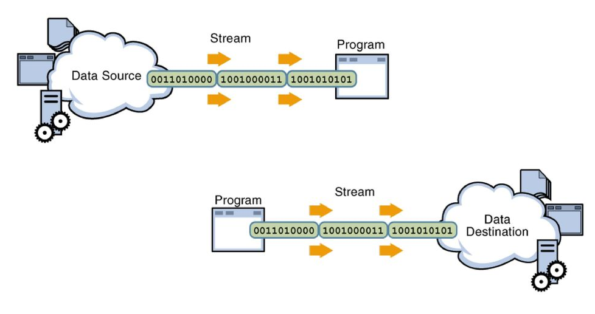

Tema 8. Entrada, eixida i excepcions
Introducció
Una part important de tot llenguatge de programació és com s’establirà el contacte amb l’exterior, bé siga mitjançant la consola o a través del sistema de fitxers, per finalment poder actuar amb l’usuari d’una aplicació en execució. Ambdós, consola i sistema de fitxers, poden funcionar tant d’entrada als nostres programes com d’eixida.
Java defineix una abstracció, els streams o fluxos per tractar la comunicació d’informació amb l’exterior. Per entendre-ho millor, un stream o flux és com un canal de comunicació entre un origen i un destí. Per exemple suposem el cas d’un programa que quan arranque haja de llegir una llista de clients d’un fitxer de text per crear una agenda. En aquest cas l’origen seria el fitxer de text i el destí el programa o aplicació que s’encarrega d’emplenar l’agenda amb el llistat de clients, doncs bé, l’stream en aquest escenari seria el canal de comunicació que s’establiria entre el fitxer de text i el programa per tal que aquest puga llegir la informació.

A la imatge anterior es poden observar dos tipus de fluxos de dades: El primer és un flux d'entrada de dades, s'enten d'entrada perquè va del sistema de fitxers al programa, mentre que el segon representa un flux de dades d'eixida, ja que aquest va del programa al sistema de fitxers.
En aquest tema explicarem com Java tracta mitjançant objectes l’establiment d'aquests canals de comunicació i quines són les operacions que hi podem fer i com s’han d’utilitzar aquestes abstraccions de Java. D’altra banda Java també ofereix el mecanisme d’excepcions per controlar els errors sobrevinguts. Una excepció és un problema que es produeix en temps d’execució. Java permet controlar aquests problemes i programar amb els try...catch la solució als errors en temps d’execució.
Entrada i eixida bàsiques
Com hem dit abans, Java organitza la entrada i eixida mitjançant l’ús d’streams, que són abstraccions en realitat, i aquests streams el que fan es transportar la informació del programa o aplicació a dispositius externs. Aquests dispositius externs poden ser bé fitxers o inclús la consola, que es tractada com un fitxer per Java.
Flux i jerarquia de classes
Com que les possibilitats que tenim en programació respecte de l’ús de fitxers és ampla, podem: llegir de fitxers, escriure en fitxers, llegir per una entrada com un teclat System.in o escriure en una eixida com un monitor System.out, Java en primera instància distingeix entre dos tipus de fluxos: flux de bytes i flux de caracters
| E/S | Bytes | Caracters |
|---|---|---|
| Flux entrada | InputStream | Reader |
| Flux eixida | OutputStream | Writer |
Java declara quatre classes abstractes, és a dir, que no podem instanciar cap objectes d'aquestes classes, que deriven directament de la superclasse «Object» que són: InputStream, OutputStream, Reader i Writer.
InputStream és la base per a totes les classes definides per al flux d’entrada de dades a nivell de bytes. A la imatge següent es mostren totes les classes que deriven d'InputStream. De totes les classes derivades de la classe abstracta InputStream, veurem amb més detall les següents: FileInputStream, DataInputStream i ObjectInputStream.

OutputStream és la classe base per a les classes que gestionen el flux d’eixida a nivell de bytes. A la imatge següent es poden observar totes les seues classes derivades. Pel que fa a aquesta classe abstracta, veurem amb més detall: FileOutputStream, DataOutputStream, PrintStream i ObjectOutputStream.

Reader és la classe per llegir streams a nivell de caracter. Observa les classes derivades a la imatge següent. D'aquesta classe abstracta veurem amb més detall: BufferedReader, InputStreamReader, FileReader

Writer és la classe per escriure a streams a nivell de caracter i les classes que deriven d'ell són les que es poden veure a la següent imatge. De totes les derivades ens centrarem en: OutputStreamWriter, FileWriter, BufferedWriter i PrintWriter.

Consola
Una de les possibilitats de realitzar l'entrada eixida a un programa és mitjançant la consola, on d'una banda es pot escriure i mostrar missatges i d'altra banda l'usuari pot introduir informació.
Utilitzant BufferedReader
BufferedReader és una classe derivada de la classe abstracta Reader que es troba dins del paquet java.io. A l'exemple següent es mostra com podem utilitzar aquesta classe.
1 2 3 4 5 6 7 8 9 10 11 12 13 14 15 | |
Consideracions de l'exemple anterior:
- S'han d'importar les llibreries necessàries per poder utilitzar les classes necessàries.
- Per instanciar un objecte de la classe BufferedReader, el constructor necessita que se li passe un objecte de tipus InputStreamReader que apunte al flux d'entrada predefinit System.in (el teclat)
- Tota instrucció relacionada amb els streams, s'han de posar dins d'un bloc try..catch.
Utilitzant Scanner
L'altra alternativa, més comoda al meu entendre, és l'ús de la classe Scanner. Aquesta classe es troba dins del paquet java.util i és una derivada de la classe arrel Object. Observa l'exemple següent d'ús de la classe Scanner:
1 2 3 4 5 6 7 | |
Algunes consideracions:
- S'han d'importar les llibreries necessàries per poder utilitzar les classes necessàries.
- Per instanciar un objecte de la classe Scanner, el constructor necessita que se li passe un flux d'entrada com pot ser: System.in (el teclat)
- A diferència del BufferedReader no és necessari posar el codi dins del bloc try..catch
Processing IDE desavantatges
Cap dels exemples anteriors els podem executar en Processing com a conseqüència de les característiques específiques d'aquest entorn de desenvolupament. Per poder provar el codi anterior, hauriem d'anar a altres IDE tipus Eclipse o Visual Studio.
Flux d'arxius
Un arxiu o fitxer és un conjunt de bytes que són emmagatzemats en un dispositiu. Un arxiu o fitxer es identificat per un nom i la descripció de la carpeta o directori (la ruta) que el conté. Una de les principals finalitats dels arxius és tindre desats en memòria secundària, quan les aplicacions ja han acabat d’executar-se, i que siguen recuperables després.
Un fitxer s’ha de poder llegir, actualitzar, esborrar registres i tornar a guardar-se de nou amb tots els canvis realitzats. Segons el dispositiu físic que els emmagatzeme, els arxius poden ser directes o seqüencials, el primer implica que per poder accedir a qualsevol registre, hem de passar prèviament pels anteriors, per exemple una cinta magnètica, mentre que el segon tipus d’arxiu permet l’accés directe al registre en qüestió sense haver de passar pels anteriors.
En Java un arxiu és una seqüencia de bytes que contenen la informació emmagatzemada. Per poder treballar amb aquestes seqüencies de bytes, Java disposa de classes com són els tipus bàsics (int, double, string..). D’una altra banda, com ja hem explicat abans, un flux és una abstracció que es refereix a una corrent (stream) de dades entre un origen (també conegut com a font o productor) i una destinació o embornal (consumidor) i la connexió que existeix entre els dos també es coneix com a pipe o tub per on circules les dades.
Quan comença qualsevol execució d’un programa Java, es creen tres objectes flux, canals pels que pot fluir informació d’entrada o eixida; aquests objectes estan definits a la classe System i són:
- System.in: entrada estàndard, permet l’entrada de dades des del teclat.Una excepció és un fallo que es produeix en temps d’execució. Classe InputStream
- System.out: eixida estàndard, permet la programa imprimir per pantalla. Classe PrintStream
- System.err: eixida d’errors, permet al programa imprimir errors per pantalla Per defecte sol ser la mateixa eixida que System.out. Classe PrintStream
Class File
Per poder identificar d’un fitxer al sistema de fitxers de qualsevol sistema operatiu, necessitem: nom i ruta. Per exemple ‘/user/data/file.txt’. El fitxer es diu file.txt i la ruta en la qual es troba és ‘/user/data/’. Aquest identificador de fitxer és el que es passa al constructor de la classe per tal d’obrir un flux.
1 2 3 4 | |
En l’exemple anterior hem utilitzat la classe File per tal d’instanciar un stream al fitxer que li hem passat per paràmetre «prova.txt». Compte que s’ha de passar la ruta absoluta d’on es troba el fitxer utilitzant la funció de Processing IDE sketchPath().
Hi ha alternatives al constructor de la classe File que hem mostrat a l’exemple anterior, es pot construir també amb dos paràmetres: ruta i nom del fitxer o inclús indicar-li la ruta mitjançant un altre objecte File.
Els mètodes de la classe File són:
| Mètode | Explicació |
|---|---|
| public boolean exists() | Torna true si el fitxer existeix |
| public boolean canWrite() | Torna true si es pot escriure al fitxer |
| public boolean canRead() | Torna true si es només de lectura |
| public boolean isFile() | Torna true si és un fitxer |
| public boolean isDirectory() | Torna true si és un directori |
| public boolean isAbsolute() | Torna true si el directori té ruta completa |
| public long length() | Torna la mida en bytes del fitxer |
| public long lastModified() | Torna el timestamp de l’última modificació |
| public String getName() | Torna una string amb el nom del fitxer |
| public String getPath() | Torna una string amb el path del fitxer |
| public String getAbsolutePath() | Torna la ruta absoluta del fitxer |
| public boolean setReadOnly() | Converteix el fitxer en només lectura |
| public boolean delete() | Elimina el fitxer o directori (si està buit) |
| public boolean renameTo(File nou) | Canvia el nom pel del fitxer nou |
| public boolean mkdir() | Crea el directori del fitxer |
| public String[] list() | Torna un array d’strings dels elements |
Activitat 801. Class File
Crea un projecte en Eclipse que obriga un fitxer de prova qualsevol, per exemple: prova.txt. Llegisca línia a línia el contingut del fitxer i el mostre per pantalla.
Fins ara hem vist com llegir, escriure i treballar amb fitxers utilitzant la classe File. A continuació estudiarem amb més detall les diferents classes que disposa Java pel tractament de l'entrada i eixida d'informació. Per tal entendre-ho millor, dividirem aquesta secció en dos blocs: Tractament a nivell de byte amb les classes abstractes InputStream i OutputStream i les seues classes derivades i tractament a nivell de caracter amb les classes abstractes Writer i Reader i les seues subclasses.
Flux de dades a nivell de byte
Com ja hem explicat abans, el tractament de l'entrada eixida en java a nivell de bytes es fa amb les classes abstractes InputStream i OutputStream de les quals deriven les classes:
- FileInputStream i FileOutputStream
- PipedInputStream i PipedOutputStream
- FilterInputStream i FilterOutputStream
- ByteArrayInputStream i ByteArrayOutputStream
- ObjectInputStream i ObjectOutputStream, etc..
FileInputStream i FileOutputStream
Tot arxiu es pot considerar en sí mateix una seqüència de bytes de baix nivell i després sobre aquesta informació es pot construir informació de mes alt nivell per tal de processar dades més complexes des de tipus bàsic fins objectes.
En altres paraules, si volem obrir un flux de dades a un fitxer o arxiu i volem llegir byte a byte per després decidir nosaltres a nivell de programació que volem fer amb aquests bytes, hauríem d’utilitzar aquestes classes.
1 2 3 4 | |
| Mètode | Explicació |
|---|---|
| FileOutputStream(String nombre) throws IOException; | Crea un objecte inicialitzat amb el nom d’arxiu que es passa com argument |
| FileOutputStream(String nombre, boolean sw) throws IOException; | Crea un objecte inicialitzat amb el nom d’arxiu que es passa per paràmetre. Si sw és true els nous bytes s’afegeixen al final |
| FileOutputStream(File nombre) throws IOException; | Crea un objecte inicialitzat amb l’objecte file que es passa per paràmetre |
| void write(byte a) throws IOException; | Escriu el byte ‘a’ al flux associat |
| void write(byte[] s) throws IOException; | Escriu l’array de bytes ‘s’ al flux |
| void write(byte[] s, int org, int len) throws IOException; | Llig una seqüència de bytes del flux i la desa a ‘s’ començant per ‘org’ i una mida de ‘len’. Torna -1 si arriba al final del fitxer |
| void close()throws IOException; | Tanca el flux i el fitxer queda lliure per al seu ús posterior |
Exemple
A continuació obrirem el fitxer «prova.txt» amb un FileInputStream per llegir-lo i desarem el seu contingut a un fitxer d’eixida «resultat.txt» que obrirem amb un FileOutputStream. Al fitxer d’eixida, bolcarem el contingut de «prova.txt»
1 2 3 4 5 6 7 8 9 10 11 12 13 14 15 16 17 18 19 | |
Activitat 802. Copiar i invertir
Basat en el codi anterior i fes que al fitxer resultat, el d’eixida, es copie el que apareix a «prova.txt», el d’entrada però a l’inrevés. Per exemple:
Un possible resultat de l'activitat anterior podria ser el que es pot observar a la imatge següent:

DataInputStream i DataOutputStream
La veritat és que treballar amb bytes quan estem parlant de fitxers o arxius que contenen informació o dades de més nivell pot resultar incomode, ja que entre altres hauríem de saber quants bytes té un caràcter, un enter o un doble.
En Java tenim les classes DataInputStream i DataOutputStream que són subclasses de les classes FilterInputStream i FilterOutputStream.
Abans d'entrar en el detall d'aquestes classes, veurem amb més profunditat que són les classes FilterInputStream i FilterOutputStream. Aquestes dues classes deriven de les classes abstractes InputStream i OutputStream. Bàsicament el que fan es sobreescriure tots els mètodes de les seues super classes i permeten agrupar bytes (Input) i desagrupar-lo(Output) de tal forma que classes derivades seues podran treballar amb informació de més alt nivell.
Per tal d'instanciar un objecte de la classe DataInputStream d'on es podria llegir, ho fariem de la següent manera:
1 2 3 4 5 6 | |
Observa el codi anterior: Primer s'instancia un objecte de la classe FileInputStream (derivada de InputStream) en la que se li indica la ruta del fitxer amb el que volem treballar. Després aquest objecte FileInputStream s'utilitza per poder instanciar un objecte de la classe DataInputStream que utilitzarem per llegir tipus de dades primitius del fitxer.
Bàsicament aquestes classes el que fan és organitzar els bytes en tipus primitius de tal forma que ja podem treballar llegint i escrivint als fluxos: enters, caràcters, reals, cadenes etc..
| Mètode | Explicació |
|---|---|
| public DataInputStream(InputStream entrada) throws IOException | Crea un objecte associat a l’stream que es passa per paràmetre |
| public final boolean readBoolean() throws IOException | Torna el valor de tipus booleà llegit |
| public final byte readByte() throws IOException | Torna el valor de tipus byte llegit |
| public final short readShort() throws IOException | Torna el valor de tipus short llegit |
| public final char readChar() throws IOException | Torna el valor de tipus char llegit |
| public final int readInt() throws IOException | Torna el valor de tipus int llegit |
| public final long readLong() throws IOException | Torna el valor de tipus long llegit |
| public final float readFloat() throws IOException | Torna el valor de tipus float llegit |
| public final double readDouble() throws IOException | Torna el valor de tipus double llegit |
| public final String readUTF() throws IOException | Torna una cadena que es va escriure en UTF |
D’aquesta forma ja no ens hem de preocupar de saber quants bytes de memòria s’han de reservar per un caràcter o un enter. Per exemple si associem un DataOutputStream a un fitxer i després cridem al mètode writeInt, realment el que s’està fent és escriure 4 bytes d’informació al fitxer de la qual cosa s’estaria encarregant de manera transparent a l’usuari.
Per tal d'instanciar un objecte de la classe DataOutputStream, on es podria escriure, ho fariem de la següent forma:
1 2 3 4 5 6 | |
Al contrari que passava amb el DataInputStream, al codi anterior estem instanciant un objecte de la classe DataOutputStream que utilitzarem per escriure la informació desitjada.
| Mètode | Explicació |
|---|---|
| public DataOutputStream(OutputStream destino) throws IOException | Crea un objecte associat a l’outputstream que es passa per paràmetre |
| public final void writeBoolean(boolean v) throws IOException | Escriu un boolean |
| public final void writeByte(int v) throws IOException | Escriu un byte |
| public final void writeShort(int v) throws IOException | Escriu un short |
| public final void writeChar(int v) throws IOException | Escriu un char |
| public final void writeChars(String v) throws IOException | Escriu tots els chars que conté la String v |
| public final void writeInt(int v) throws IOException | Escriu un int |
| public final void writeLong(long v) throws IOException | Escriu un long |
| public final void writeFloat(float v) throws IOException | Escriu un float |
| public final void writeDouble(double v) throws IOException | Escriu un double |
| public final void writeUTF(String cad) throws IOException | Escriu la cadena cad en format UTF |
| public final int close()throws IOException | Tanca el flux |
Un altre exemple d'ús del DataInputStream:
1 2 3 4 5 6 7 8 9 10 | |
A continuació podem veure un exemple en el que fem ús del DataOutputStream i DataInputStream. El que fa aquest exemple és escriure a un fitxer d’eixida «pluges.dat» dos valors double aleatoris per després llegir-los amb un DataInputStream i mostrar-los per pantalla.
El codi podria ser el següent:
1 2 3 4 5 6 7 8 9 10 11 12 13 14 15 16 17 18 19 20 21 22 23 24 25 26 27 | |
Activitat 803. Data Input i Data Output
Crea un projecte en Processing copia el codi anterior i una vegada acabada l'execució del programa, obre el fitxer "pluges.dat" i compara el que s'ha mostrat a consola amb el que s'ha gravat al fitxer. Posa el mateix? Per què?
PrintStream
La classe PrintStream deriva de FilterOutputStream i el valor afegit d’aquesta classe derivada és que permet afegir el caràcter final de línia als fitxers. Aquests tipus de fluxos són sempre d’eixida i s’associen a un altre flux de bytes de més baix nivell. System.out és un objecte de tipus PrintStream.
System.out és un clar exemple de PrintStream
1 2 3 4 5 | |
| Mètode | Explicació |
|---|---|
| public PrintStream(OutputStream destino) | Crea un objecte associat a qualsevol objecte d’eixida per paràmetre |
| public PrintStream(OutputStream destino, boolean flag) | Crea un objecte associat a qualsevol objecte d’eixida per paràmetre. Si flag és true, es produeix un bolcat automàtic al escriure final de línia. |
| public void flush() | Bolca el flux actual |
| public void print(Object obj) | Escriu la representació de l’objecte obj al flux |
| public void print(String cad) | Escriu la cadena al flux |
| public void print(char c) | Escriu un caràcter al flux |
| public void println(Object obj) | Escriu la representació de l’objecte al flux i final de línia |
| public void println(String cad) | Escriu la cadena al flux i final de línia |
Observa el codi següent. Utilitzant la classe PrintStream s'obre un fitxer 'output.txt' dintre del qual s'escriurà una sola cadena de caracters 'data' i després es tancarà l'stream una vegada finalitzat l'execució del codi.
1 2 3 4 5 6 7 8 9 10 11 12 13 14 | |
Activitat 804. LLig per teclat i copia
Utilitzant el mètode mouseClicked fes una aplicació de tal forma que tot allò que es teclege es guarde en un fitxer de text juntament amb l'hora a la qual s'ha escrit. Per exemple, si l'usuari escriu per pantalla el seu nom, "Manolo" i prem Intro, al fitxer d'eixida s'hauria de gravar:
[09:05:25] - Manolo
Has d'utilitzar la classe PrintStream per fer aquesta activitat.
Flux de dades a nivell de caracter
Una altra forma de poder treballar amb fitxers en lloc de a nivell de byte com estavem fent als apartats anteriors, és fer-ho a nivell de caracter. Al cap i a la fi els arxius, en una gran majoria, solen ser seqüències de caracters i des del punt de vista lògic ens resulta més natural treballar amb ells a aquest nivell.
Reader i writer
Els arxius de text són arxius de caràcters, es poden crear fluxos de bytes o de caràcters derivats de les classes abstractes Reader i Writer.
Els fluxos Reader i Writer són fluxos de Java orientats a caràcters. Amb aquests fluxos podem llegir i escriure caràcters o cadenes de caràcters al dispositius connectats mitjançant aquests fluxos.
Per llegir arxius de caràcters s’utilitzen fluxos derivats de la classe Reader on es declaren o sobreescriuen mètodes per la lectura de caràcters. Els mètodes més importants són:
| Mètode | Explicació |
|---|---|
| public int read() | Llig un caràcter en forma d’enter. Si arriba al final del fitxer torna -1 |
| public int read(char [] b) | Llig una seqüencia de caràcters fins completar l’array b o llegir el final del fitxer. Torna el nombre de caràcters llegits o -1 si arriba al final de l’arxiu |
InputStreamReader i OutputStreamWriter
Els fluxos de la classe IntpuStreamReader envolten (wrap) a un flux de bytes; converteixen la seqüència de bytes en seqüència de caràcters i així ja no ho hem de fer nosaltres; la classe deriva directament de Reader, pel que té disponibles els mètodes read() de la seua classe pare per la lectura de caràcters
1 2 3 | |
1 2 3 | |
| Mètode | Explicació |
|---|---|
| void close() | Tanca el flux i allibera tots els recursos del sistema associats |
| String getEconding() | Retorna el nom de la codificació de caràcters que utilitza aquest flux |
| int read() | Llegeix un sol caràcter |
| int read(char[] buf, int offset, int length) | Llegeix caràcters en una part d'una matriu |
| boolean ready() | Indica si aquest flux està llest per ser llegit |
Els mètodes de la classe OutputStreamWriter són:
| Mètode | Explicació |
|---|---|
| void close() | Tanca el corrent, rentant-lo primer |
| void flush() | Redueix el corrent |
| String getEconding() | Retorna el nom de la codificació de caràcters que utilitza aquest flux |
| void write(char [] buf, int off, int len) | Escriu una part d'una matriu de caràcters |
| void write(int c) | Escriu un sol caràcter |
| void write(String str, int off, int len) | Escriu una part d'una cadena |
Activitat 805. InputStreamReader i OutputStreamReader
Repeteix l'activitat anterior, la 5, però utilitzant InputStreamReader i OutputStreamReader
Però allò normal és que no s'utilitzen directament aquestes classes sino que es faja ús de FileReader i FileWriter.
FileReader i FileWriter
Per llegir arxius de text o de caràcters es pot crear un flux del tipus FileReader, aquesta classe deriva d’InputStreamReader, hereta els mètodes read() per a llegir caràcters, el constructor té com entrada una cadena amb el nom de l’arxiu
Per exemple
1 2 3 | |
| Constructor | Explicació |
|---|---|
| FileReader(File file) | Crea un nou FileReader , amb el nom del fitxer des del qual cal llegir |
| FileReader(FileDescriptor fd) | Crea un nou FileReader , donat el FileDescriptor per llegir |
| FileReader(String fileName) | Crea un nou FileReader , amb el nom del fitxer des del qual cal llegir |
Els mètodes dels que disposa FileReader són:
- Heretats de java.io.InputStreamReader: close, getEncoding, read, ready
- Heretats de java.io.Reader: mark, markSupported, read, reset, skip
- Heretats de java.lang.Object: clone, equals, finalize, getClass, hashCode, notify, notifyAll, toString, wait
No es freqüent utilitzar directament fluxos OutputStreamWriter, encara que resulta interessant perquè la classe FileWriter és una extensió d’ella. Dissenyada per escriure en un arxiu de caràcters, els fluxos d’aquest tipus escriuen caràcters amb el mètode write() a l’arxiu al que s’associa el flux quan es crea l’objecte.
1 2 3 4 | |
| Constructor | Explicació |
|---|---|
| FileWriter(File file) | Construeix un objecte FileWriter donat un objecte File |
| FileWriter(File file, boolean append) | Construeix un objecte FileWriter donat un objecte File |
| FileWriter(FileDescriptor fd) | Construeix un objecte FileWriter associat a un descriptor de fitxer |
| FileWriter(String fileName) | Construeix un objecte FileWriter amb un nom de fitxer |
| FileWriter(String fileName, boolean append) | Construeix un objecte FileWriter amb un nom de fitxer amb un booleà que indica si s'han d'afegir o no les dades escrites |
En general no resulta eficient llegir directament d’un flux d’aquest tipus, s’utilitzarà un flux BufferedReader
Activitat 806. FileWriter i FileReader
Utilitzant les classes anteriors, obre un fitxer que continga text, llig tot el seu contingut i enregistra'l a un fitxer d'eixida amb la condició que has de canviar majúscules per minúscules i a l'inrevés des del fitxer d'origen.
BufferedReader i BufferedWriter
La lectura d’arxius de text es realitza amb un flux que emmagatzema els caràcters en un buffer intermedi, aquests no es lligen directament de l’arxiu si no del buffer. D’aquesta manera augmentem l’eficiència a les operacions d’entrada, la classe BufferedReader permet crear fluxos de caràcters amb buffer que no és més que una forma d’organitzar el flux bàsic de caràcters del que ve el text perquè al crear un flux BufferReader, aquest s’inicialitza com un flux de caràcters InputStreamReader o qualsevol altre.
El constructor de la classe té un argument de tipus Reader, FileReader o InputStreamReader, el flux creat disposa d’un buffer de grandària suficient, el qual es pot especificar en el constructor amb un segon argument encara que no fa falta. Exemples de fluxos amb buffer.
Els mètodes de la classe BufferedReader són:
| Mètode | Explicació |
|---|---|
| void close() | Tanca el flux i allibera tots els recursos del sistema associats |
| void mark(int readAheadLimit) | Marca la posició actual al flux |
| boolean markSupported() | Indica si aquest flux admet l'operació mark(), que fa |
| read() | Llegeix un sol caràcter |
| int read(char[] cbuf, int off, int len) | Llegeix caràcters en una part d'una matriu |
| String readLine() | Llegeix una línia de text |
| boolean ready() | ndica si aquest flux està llest per ser llegit |
| void reset() | Restableix el flux a la marca més recent |
| long skip(long n) | Omet personatges |
1 2 3 4 5 6 7 8 9 10 11 12 13 | |
BufferedWriter, per un altre costat, escriu text en un flux de sortida de caràcters, guarda els caràcters en memòria intermèdia (buffer) per tal de proporcionar una escriptura eficient de caràcters, matrius i cadenes individuals.
Es pot especificar la mida de la memòria intermèdia o es pot acceptar la mida predeterminada. El valor predeterminat és prou gran per a la majoria de propòsits.
Es proporciona un mètode newLine(), que utilitza la pròpia noció de separador de línies de la plataforma tal com es defineix per la propietat del sistema line.separator . No totes les plataformes utilitzen el caràcter de nova línia ('\n') per acabar les línies. Per tant, es prefereix cridar aquest mètode per acabar cada línia de sortida que escriure directament un caràcter de nova línia.
Els mètodes de la classe són:
| Mètode | Explicació |
|---|---|
| void close() | Tanca el corrent, rentant-lo primer |
| void flush() | Redueix el corrent |
| void newLine() | Escriu un separador de línies |
| void write(char[] cbuf, int off, int len) | Escriu una part d'una matriu de caràcters |
| void write(int c) | Escriu un sol caràcter |
| void write(String s, int off, int len) | Escriu una part d'una cadena |
Exemple
1 2 3 4 5 6 7 8 9 10 11 12 13 14 15 16 17 18 19 20 21 22 23 24 | |
PrintWriter
Els fluxos més utilitzats en l’eixida de caràcters són de tipus PrintWriter, aquesta classe declara constructors per associar un flux PrintWriter amb qualsevol altre de tipus Writer o bé OutputStream.
| Mètode | Explicació |
|---|---|
| public PrintWriter(OutputStream destí) | Crea un flux associat amb un altre d’eixida a nivell de byte. |
| public PrintWriter(Writer destino) | Crea un flux associat amb un altre d’eixida de caràcters de tipus Writer. |
La importància d’aquesta classe radica en que defineix mètodes print() i println() per cadascun dels tipus de dades simples, per String i per Object; la diferència entre els mètodes print() i println() està en que el segon afegeix els caràcters de final de línia a continuació dels escrits per l’argument.
| Mètode | Explicació |
|---|---|
| public void print(Object obj) | Escriu la representació de l’objecte obj al flux |
| public void print(String cad) | Escriu la cadena al flux |
| public void print(char c) | Escriu el caràcter c al flux. |
| public void println(Object obj) | Escriu la representació de l’objecte obj al flux i final de línia |
| public void println(String cad) | Escriu la cadena al flux i el final de línia |
| public void println(char c) | Escriu el caràcter c al flux i final de línia. |
Exemple
1 2 3 4 5 6 7 8 9 10 11 12 13 14 15 16 | |
Fixa't en l'exemple anterior i fes la següent activitat.
??? question "Activitat 807. Repeteix l'activitat 806 però utilitzant les classes PrintWriter i BufferedReader.
Arxius d'objectes
Fins ara hem tractat el tema d'entrada - eixida d'informació utilitzant els tipus primitius o bàsics que ens proporciona el llenguatge de programació: int, char, float, String... però que passa si el que volem desar o llegir des d'un dispositiu extern és un o diversos objectes? Com es guarden i com es recuperen aquestos objectes?
Java proporciona una mecanisme que s'anomena serialització que consisteix en convertir un objecte en una seqüència de bytes de tal forma que, ara sí, es podrà desar a un fitxer o un dispositiu extern. El procés de lectura d'un objecte serialitzat a un fitxer, per contra, s'anomena desserialització.
Per tal que un objecte continue existint, és a dir, que siga persistent, una vegada ja hem finalitzat l’execució d’un programa o aplicació l’hem de desar a un arxiu d’objectes. Per poder aconseguir açò, utilitzarem les classes ObjectInputStream i ObjectOutputStream
Classe d'objecte persistent
Serialització: és el procés de convertir un objecte (incloses les referències a altres objectes) a una seqüència de bytes, així com també l'acció de reconstruir eixos bytes en un objecte viu en un futur. La serialització s'utilitza quan vols persistir un objecte, és a dir, que dure més que el que dura l'execució d'un programa o aplicació.
La declaració de la classe els objectes de la qual van a ser persistents, han de implementar la interfície «serializable» del paquet java.io, la qual és buida, no declara mètodes, simplement indica a la màquina virtual de Java que les instàncies d’aquestes classes podran gravar-se en un fitxer.
Exemples
1 | |
1 2 3 4 5 6 7 8 9 10 11 12 13 14 | |
ObjectOutputStream
Els fluxos de la classe ObjectOutputStream s’utilitzen per gravar objectes persistents. El mètode writeObject() escriu qualsevol objecte d’una classe serializable en el flux de bytes associat. Pot llençar excepcions del tipus IOException que és necessari processar.
1 | |
El constructor de la classe espera un argument de tipus OutputStream, que és la base dels fluxos d’eixida a nivell de bytes, per tant, per crear aquest tipus de fluxos primer es crea un d’eixida a nivell de bytes associat a un arxiu extern i a continuació, es passa com argument al constructor de ObjectOutputStream, per exemple:
1 2 3 4 5 6 | |
A continuació es pot escriure qualsevol objecte al flux:
1 2 3 4 5 | |
ObjectInputStream
El objectes guardats en arxius amb fluxos de la classe ObjectOutputStream es recuperen i lligen amb fluxos d’entrada del tipus ObjectInputStream, aquesta classe és una extensió d’InputStream, a més a més, implementa la interfície DataInput, per això disposa de diversos mètodes d’entrada (read) per cadascun dels tipus de dades com readInt() o altres. El mètode més important definit per la classe ObjectInputStream és readObject(), el qual llig un objecte del flux d’entrada, és a dir, de l’arxiu associat al flux de baix nivell; l’objecte llegit es va escriure en el seu moment amb el mètode writeObject()
1 | |
El constructor de fluxos ObjectInputStream té com entrada un altre flux de baix nivell de qualsevol tipus derivat d’InputStream, per exemple: FileInputStream associat amb l’arxiu d’objectes. A continuació es crea un flux d’entrada per llegir els objectes de l’arxiu «archivoObjects.dat»
1 2 | |
El constructor llença una excepció si, per exemple, l’arxiu no existeix, aquella és del tipus «ClassNotFoundException» o «IOException», és necessari poder capturar aquestes excepcions
1 2 3 4 5 6 7 8 9 10 11 12 13 14 15 16 17 18 19 20 21 22 23 24 25 26 27 28 29 30 | |
```java linenums="1" class Dog implements Serializable {
String name;
String breed;
public Dog(String name, String breed) {
this.name = name;
this.breed = breed;
}
}
```
Activitat 808. Classe alumne
Dissenya una aplicació amb Eclipse IDE on es podrà per un costat introduir informació d'alumnes que es guardaran en un fitxer que s'anomene: 'alumnes.dat'. Al principi l'aplicació llegirà de l'arxiu 'alumnes.dat' tots els alumnes inscrits al curs i els mostrar per pantalla, ordenats alfabèticament pel cognom. Una vegada haja mostrat tots els alumnes, l'aplicació esperarà que s'introduisca algun alumne nou per consola, una vegada introduits totes les dades de l'alumne, aquesta es guardarà en un objecte primer i després al fitxer 'alumnes.dat' a continuació dels que ja havien estat enregistrats. Després tornarà a mostrar els alumnes ordenats alfabèticament i torna a començar.
Excepcions
Un problema important en el desenvolupament del programari és la gestió de les errades o errors. No importa quan bé estiga planificat aquest desenvolupament i quan eficient siga l’equip desenvolupador. És una màxima en informàtica el fet que sempre apareixeran problemes. Aquests problemes inesperats són problemes o errors que apareixen en temps d’execució, per exemple: esgotament de memòria o recursos, errors en els intervals dels bucles, divisions per zero, arxius no existents, etc..
Les excepcions són el mecanisme previst per Java per tractar aquests problemes sobrevinguts. Amb les excepcions, Java dona la possibilitat al programador salvar aquest tipus de situacions de manera controlada sense que el programa o aplicació es tanque, bloquege o deixe de respondre.
Condicions d'errors en programes
Programar, escriure codi, mètodes, classes, etc.. que siga eficient, eficaç i lliure d’errades és altament complicat. El control d’errades és una part tant important en el disseny d’aplicacions que a totes les diferents metodologia de cicle de vida software, hi ha una fase que es dedica única i exclusivament a detectar aquestes errades i solucionar-les i així i tot és impossible produir programari totalment lliure d’errades.
Tractament dels codis d'error
Java inclou un mecanisme de gestió d’excepcions per poder intentat cobrir possibles errades en els programes en temps d’execució. Aquest mecanisme consisteix en capturar (catch) els errors quan es produeixen en temps d’execució.
Quan es produeix un fallo en temps d’execució es podrien fer tres coses: parar l’execució de sobte, continuar executant esperant que no passe res o establir una senyal d’error que el mateix codi amb altres sentències s’encarregue de gestionar.
Aquestes senyals que envia (throw) el programa quan es produeix alguna errada en Java s’anomenen excepcions i el bloc del codi on es posen les sentències per tal d’intentar solucionar-lo en temps d’execució és el bloc catch.
Excepcions en Java
Una excepció és un fallo que es produeix en temps d’execució. Si hem escrit bé el codi per tal de gestionar aquest fallo, el flux d’execució passa al codi destinat a gestionar les excepcions, en cas contrari el programa acaba la seua execució.
Aquestes excepcions es poden produir per exemple si intenten accedir a un element d’un array fora dels seus límits, si intentem obrir un fitxer que no existeix o està bloquejat, si dividim per zero, etc..
El model de gestió d’excepcions a Java afegeix cinc noves paraules reservades: try, throw, throws, catch i finally.
- try: bloc on es detectaran les excepcions
- catch: captura les excepcions que es produeixen al bloc try
- throw: expressió per llençar excepcions
- throws: indica les excepcions que pot llençar un mètode.
- finally: bloc opcional situat després del try catch
Les passes del model de control d’excepcions en Java són:
- El bloc try conté les instruccions o part del codi susceptible de provocar algun error.
- Si en temps d’execució es produeix algun error dins de les sentències que es troben dins del bloc try, es llença una excepció.
- S’executa el codi que es troba dins del bloc catch associat a la excepció que s’ha llençat al punt anterior.
- S’executa el bloc finally (opcional)
Exemple. Suposem una classe persona que incorporarem a la nostra aplicació. Aquesta classe té un constructor al qual se li passa el DNI, imaginem ara que de la nostra aplicació instanciem un objecte de la classe persona a la qual l direm Joan però quan cridem al constructor de la classe no li passem un DNI, aquest «mal ús» de la classe Persona, llençaria una excepció que hauria de capturar la nostra aplicació al bloc catch i és ací, en aquest bloc d’instruccions, en el que s’hauria de corregir la situació o avisar a l’usuari de l’aplicació del que ha passat.
1 2 3 4 5 6 7 8 9 10 11 12 13 14 | |
Al codi anterior hem crear un mètode escolta que l’únic que fa és llençar una excepció. Quan al mètode main cridem a la funció escolta, si volem fer ús del sistema d’excepcions de Java, l’haurem de posar dins del bloc try. Just desprès d’acabar el conjunt d’instruccions del bloc try posem un catch indicant-li quina és la classe d’excepció que hauriem de capturar, al nostre cas Exception, i dins del bloc catch posariem el codi que s’hauria d’executar en cas de produir-se eixe error. Normalment es solen posar missatges d’error que alerten l’usuari de l’aplicació.
A continuació explicarem amb més detall què és el que fan cadascun dels blocs del mecanisme d’excepcions que ha dissenyat Java.
Bloc try
Dins del bloc try s’han de posar aquelles sentències que poden llençar alguna excepció entre claudàtors, després del claudàtor de tancament s’ha de posar el bloc catch o controlador d’excepcions almenys un bloc catch. Si l’excepció que es produeix coincideix amb algun dels paràmetres dels blocs catch que hi han, s’executen les sentències que es troben a dintre.
Els blocs try, de la mateixa forma que amb totes les sentències de programació estructurada, es poden niar.
1 2 3 4 5 6 7 8 9 10 11 12 13 14 15 | |
A l’exemple anterior és pot observar un codi amb dos blocs try niats on el primer bloc try té dos blocs catch per controlar varies excepcions
Bloc throw
La sentència throw llença (raise) una excepció. Les excepcions en Java són objectes, per tant, una excepció és una instància d’una classe que deriva de la classe Exception A l’exemple anterior com es pot observar es capturen dos tipus d’excepcions diferents, una generica Exception i una altra FileNotFoundException. Aquesta última es produeix normalment quan volem obrir un fitxer, amb la classe File per exemple, i aquest no existeix.
Bloc catch
El bloc catch o de captura d’excepcions. Quan una excepció es llença des d’un bloc try, si el tipus d’excepció que s’ha llençat coincideix amb el tipus d’excepció que s’ha passat per paràmetre al catch, s’executarien les sentències que hi han dins del bloc catch. Normalment es sol posar el codi necessari per poder eixir de la situació en la que ens trobem quan s’alça una excepció.
Clàusula finally
El bloc finally en un try..catch, és el bloc d’instruccions que s’executarà sempre, hi haja excepcions o no, al final de tot el nostre codi. Normalment es solen posar sentències per tal d’alliberar tot allò que podem haver creat dins del bloc try, és a dir, tancar fluxos, fitxers, connexions a bases de dades etc..amb la finalitat d’alliberar memòria.
Classes d'excepcions en Java

Nove excepcions
Java permet la creació d’excepcions noves que deriven de la classe base Exception